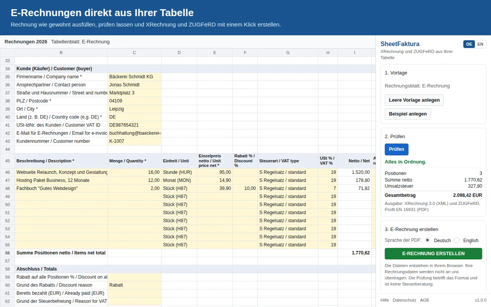

XRechnung aus Excel erstellen
Sie schreiben Ihre Rechnungen in Excel oder einem anderen Tabellenprogramm und brauchen jetzt eine XRechnung oder eine ZUGFeRD-Datei? Dafür müssen Sie nicht auf eine Buchhaltungssoftware umsteigen. Diese Anleitung zeigt zwei Wege: direkt im Browser mit der Excel-Vorlage von SheetFaktura, oder über Google Sheets mit dem Add-on SheetFaktura.
- Weg 1, ohne Google-Konto: Excel-Vorlage herunterladen, in Excel ausfüllen und auf der Seite SheetFaktura für Excel auswählen. Die Datei wird in Ihrem Browser gelesen und nicht hochgeladen.
- Weg 2, in Google Sheets: Excel-Datei in Google Sheets öffnen und die E-Rechnung mit dem Add-on SheetFaktura erstellen.
- Beide Wege prüfen dieselben Pflichtangaben und erstellen eine XRechnung (XML) und eine ZUGFeRD-PDF. 5 E-Rechnungen sind kostenlos.
Zum Werkzeug: Excel-Rechnung umwandeln
Warum die PDF aus Excel nicht mehr reicht
Eine Rechnung, die Sie in Excel schreiben und als PDF speichern, ist keine E-Rechnung im Sinne des Umsatzsteuergesetzes. Eine E-Rechnung wird in einem strukturierten elektronischen Format ausgestellt, übermittelt und empfangen, das eine elektronische Verarbeitung ermöglicht. Eine PDF ohne eingebettete Rechnungsdaten ist eine sonstige Rechnung. Deshalb lässt sich eine fertige PDF auch nicht einfach umwandeln: Die Rechnungsdaten müssen einmal strukturiert erfasst werden, zum Beispiel in der Vorlage von SheetFaktura.
Für Rechnungen an andere Unternehmen im Inland sind Papier und PDF nur noch übergangsweise erlaubt. Für Umsätze aus 2025 und 2026 dürfen Sie bis Ende 2026 noch Papier oder, mit Zustimmung des Empfängers, eine PDF verwenden. Für Umsätze aus 2027 gilt das bis Ende 2027 nur, wenn Ihr Gesamtumsatz im Vorjahr nicht mehr als 800.000 Euro betrug. Danach ist die E-Rechnung Pflicht. Ausgenommen bleiben unter anderem Kleinunternehmer und Rechnungen bis 250 Euro. Alle Fristen: E-Rechnungspflicht 2025 bis 2028. Der Bund verlangt E-Rechnungen von seinen Lieferanten schon seit 2020: Rechnung an Behörden.
Weg 1: Direkt im Browser mit der Excel-Vorlage
Sie brauchen Excel 2007 oder neuer, Excel im Browser, LibreOffice Calc oder Numbers, dazu einen aktuellen Browser. Ein Google-Konto ist nicht nötig.
- Auf der Seite SheetFaktura für Excel die leere Vorlage oder die Beispielrechnung herunterladen. Alle Felder der Vorlage: Rechnungsvorlage Excel für die E-Rechnung.
- Die Datei in Excel öffnen. Excel zeigt Dateien aus dem Internet zuerst in der geschützten Ansicht; klicken Sie dort auf Bearbeitung aktivieren.
- Die gelben Felder ausfüllen: Ihre Firma, den Kunden, die Positionen, die Steuerart und die Zahlung. Pflichtfelder haben einen Stern. Für Dokumentart, Einheit und Steuerart gibt es Auswahllisten.
- Die Datei als .xlsx speichern. In LibreOffice Calc wählen Sie dafür den Dateityp Excel 2007-365 (.xlsx), in Numbers Ablage, Exportieren, Excel.
- Auf der Seite SheetFaktura für Excel die Datei auswählen oder hineinziehen. Fehlende oder falsche Angaben werden auf Deutsch erklärt und mit der Zelle genannt, zum Beispiel Zelle C6. Korrigieren Sie die Angabe in Excel, speichern Sie und wählen Sie die Datei erneut aus.
- E-Rechnung erstellen klicken und beide Dateien speichern: die XRechnung 3.0 (XML) und die ZUGFeRD-PDF (PDF/A-3 mit eingebetteter XML, Profil EN 16931).
Die Datei wird nur in Ihrem Browser gelesen, auch XRechnung und PDF entstehen dort. Ihre Rechnungsdaten werden nicht an uns übertragen. SheetFaktura liest nur seine eigene Vorlage, kein beliebiges Excel-Layout. Ihre bisherigen Angaben übertragen Sie deshalb einmal in die gelben Felder. Werte aus einem anderen Blatt fügen Sie am besten mit Rechtsklick und der Einfügeoption Werte ein, dann bleibt die Formatierung der Vorlage erhalten.
Zum Werkzeug: Excel-Rechnung umwandeln
Weg 2: In Google Sheets mit dem Add-on
Wenn Sie ohnehin mit Google arbeiten, öffnen Sie Ihre Excel-Datei in Google Sheets (auf Deutsch Google Tabellen) und erstellen die E-Rechnung dort mit dem Add-on SheetFaktura aus dem Google Workspace Marketplace. Dafür brauchen Sie ein Google-Konto. Die Datei darf nicht mit einem Passwort geschützt sein; Ihre ursprüngliche Excel-Datei auf dem Computer bleibt unverändert.
Schritt 1: Excel-Datei in Google Sheets öffnen
Importieren: In Google Sheets eine neue, leere Tabelle anlegen. Im Menü Datei auf Importieren klicken und die Excel-Datei auswählen oder hochladen. Als Importoption Neues Tabellenblatt einfügen wählen und auf Importieren klicken. Ihre Excel-Daten stehen dann als eigenes Tabellenblatt in der Google-Tabelle. In dieselbe Tabelle legen Sie gleich die Vorlage von SheetFaktura.
Aus Google Drive öffnen und umwandeln: Laden Sie eine Excel-Datei in Google Drive hoch und öffnen sie, bearbeitet Google Sheets sie zunächst im Office-Format. Dabei stehen Apps Script und Google-Workspace-Add-ons nicht zur Verfügung, also auch SheetFaktura nicht. Wandeln Sie die Datei deshalb um: im Menü Datei auf Als Google Tabellen speichern klicken. In der umgewandelten Datei können Sie Add-ons wie SheetFaktura nutzen. Wer viele Dateien hochlädt, kann in den Einstellungen von Google Drive die Option Hochgeladene Dateien in das Google-Dokumentenformat konvertieren einschalten.
Schritt 2: Vorlage anlegen und Daten übernehmen
- Im Menü Erweiterungen auf SheetFaktura und dann auf Seitenleiste öffnen klicken.
- Leere Vorlage anlegen klicken. Es entsteht ein Rechnungsblatt mit gelben Feldern für Ihre Firma, den Kunden, die Positionen, die Steuerart und die Zahlung. Pflichtfelder haben einen Stern.
- Die Werte aus Ihrem Excel-Blatt in die gelben Felder kopieren. Zum Einfügen Nur Werte einfügen nutzen: Strg + Umschalt + V, auf dem Mac ⌘ + Umschalt + V. So bleibt die Formatierung der Vorlage erhalten.
- Für weitere Positionen Zeilen oberhalb von Summe Positionen einfügen.

Das Rechnungsblatt von SheetFaktura in Google Sheets: gelbe Felder für Kunde und Positionen, rechts die Seitenleiste. Die Excel-Vorlage hat dieselben Felder.
Schritt 3: Prüfen und E-Rechnung erstellen
Klicken Sie in der Seitenleiste auf Prüfen. Fehlende oder falsche Angaben werden auf Deutsch erklärt; ein Klick auf die Zellbezeichnung springt zum Problem. Danach E-Rechnung erstellen klicken und beide Dateien speichern: die XRechnung 3.0 (XML) und die ZUGFeRD-PDF (PDF/A-3 mit eingebetteter XML, Profil EN 16931). Beide enthalten dieselbe Rechnung. Die Dateien entstehen in Ihrem Browser; Ihre Rechnungsdaten werden nicht an uns übertragen.
Alle Felder erklärt die Anleitung XRechnung in Google Sheets erstellen. Was die ZUGFeRD-PDF ist, steht unter ZUGFeRD in Google Sheets, Antworten auf häufige Fragen in der Hilfe.
Worauf Sie bei den Angaben achten
- Nettopreise: In die Spalte Einzelpreis netto gehören Preise ohne Umsatzsteuer. Die Steuer berechnet SheetFaktura aus Steuerart und Steuersatz.
- Käuferreferenz: Die XRechnung verlangt immer eine Käuferreferenz. Bei Firmen genügt zum Beispiel die Bestellnummer, die Kostenstelle oder der Name des Bestellers; bei Behörden ist es die Leitweg-ID.
- E-Mail für E-Rechnungen: Ohne Leitweg-ID braucht die Rechnung eine elektronische Adresse des Kunden. Tragen Sie die E-Mail-Adresse ein, unter der Ihr Kunde E-Rechnungen empfängt.
Tipps für die nächsten Rechnungen
- Für jede neue Rechnung das Rechnungsblatt kopieren: in Excel mit Rechtsklick auf den Blattnamen, Verschieben oder kopieren, Kopie erstellen; in Google Sheets mit Duplizieren. Hat eine Excel-Datei mehrere Rechnungsblätter, wählen Sie auf der Seite SheetFaktura für Excel das richtige aus. Das Add-on verwendet das gerade geöffnete Rechnungsblatt.
- Ihre eigenen Angaben wie Firma und Bankverbindung stehen dann schon im Blatt; Sie passen vor allem Kunde, Rechnungsnummer, Datum und Positionen an.
- Welche Datei Ihr Kunde bekommt, klären Sie mit ihm: Die XRechnung ist das reine Datenformat, die ZUGFeRD-PDF ist zusätzlich als Dokument lesbar.
Häufige Fragen
Funktioniert SheetFaktura mit Excel?
Ja. Sie füllen die Excel-Vorlage von SheetFaktura aus und wählen die Datei auf der Seite SheetFaktura für Excel aus. XRechnung und ZUGFeRD-PDF entstehen in Ihrem Browser. Ein Add-on in Excel selbst gibt es nicht; das Add-on gibt es für Google Sheets.
Brauche ich ein Google-Konto?
Nur für den Weg über Google Sheets. SheetFaktura für Excel funktioniert ohne Konto, die Datei wird nicht hochgeladen.
Warum sehe ich SheetFaktura bei meiner Excel-Datei in Google Sheets nicht?
Vermutlich ist die Datei noch im Office-Format geöffnet. Dann stehen Add-ons nicht zur Verfügung. Speichern Sie die Datei über Datei und Als Google Tabellen speichern im Google-Format.
Kann ich auch LibreOffice, Numbers oder CSV-Dateien verwenden?
Ja. Mit LibreOffice Calc oder Numbers füllen Sie die Vorlage aus und speichern sie als .xlsx. Google Sheets importiert außerdem ODS-, CSV- und TSV-Dateien.
Was kostet SheetFaktura?
5 E-Rechnungen sind kostenlos. Danach 7,90 Euro im Monat, monatlich kündbar, oder 69 Euro im Jahr, jeweils zuzüglich Umsatzsteuer. Ein Lizenzschlüssel gilt für beide Wege. XML und PDF ohne Aufpreis, keine Begrenzung der Anzahl.
Zum Werkzeug: Excel-Rechnung umwandeln Add-on im Google Workspace Marketplace
SheetFaktura prüft das Format Ihrer Rechnung; es ersetzt keine Steuerberatung.
Quellen
- Google Docs-Editoren-Hilfe: Datensätze und Tabellen importieren und Tastenkombinationen für Google Tabellen
- Google Drive-Hilfe: Office-Dateien in den Docs-Editoren bearbeiten
- Umsatzsteuergesetz: § 14 UStG und § 27 UStG (Absatz 38: Übergangsregeln); Ausnahmen: § 33 und § 34a UStDV
Stand der Zusammenfassung: November 2026. Diese Seite ist keine Steuerberatung; im Einzelfall klären Sie Fragen bitte mit Ihrer Steuerberatung.